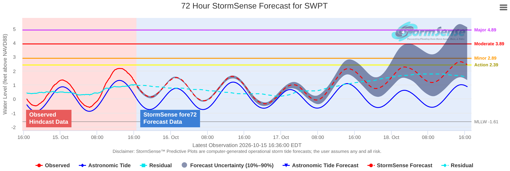
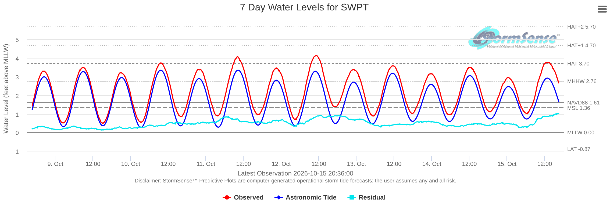
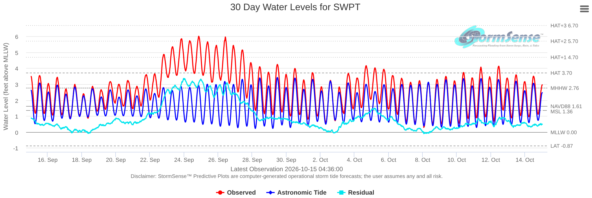

Disclaimer – StormSense™ Predictive Plots are computer-generated operational storm tide forecasts; the user assumes any and all risk. The Virginia Institute of Marine Science (VIMS) makes no warranty concerning any of the data or forecasts displayed on StormSense Latest (derekloftis.github.io/StormSense-latest/), on the StormSense Ensemble (derekloftis.github.io/StormSense-ensemble/), or on VIMS pages that embed them, such as www.vims.edu/people/loftis_jd/StormSense/forecasts/noaa/swpt/. StormSense Latest is rebuilt every 6 hours at about 00:20, 06:20, 12:20 and 18:20 UTC, and the StormSense Ensemble every 6 hours at about 00:40, 06:40, 12:40 and 18:40 UTC. For each station StormSense provides a 72-hour forecast (fore72) and 7-day and 30-day observation hindcasts (7day, 30day), each in feet above mean lower low water (MLLW) and above NAVD88, each with CSV and JSON downloads and metadata documents. The information provided by StormSense is offered “as-is” with no claim explicit or implied as to its accuracy or timeliness. The user assumes all risk regarding StormSense or any of the following components:
Unverified Water Levels – StormSense displays the same six-minute gauge observations shown by VIMS Tidewatch: water levels from National Oceanic and Atmospheric Administration (NOAA/NOS) Center for Operational Oceanographic Products and Services (CO-OPS) stations, U.S. Geological Survey (USGS) tide gauges, VIMS tide stations and StormSense/GreenStream sensors. The exceptions are Chesapeake Bay Bridge Tunnel (CBBT, 8638901), Money Point (MNPT, 8639348), Dahlgren (8635027) and Washington, DC (8594900), whose observations come directly from the NOAA CO-OPS Data API relative to MLLW; their NAVD88 heights are obtained as described under Tidal Datums. Consistent with its purpose as a flood warning system, StormSense displays observed six-minute water levels in near-real time or as soon as possible after collection. Due to this requirement, manual verification and data quality-control procedures are not implemented. Extraneous heights or data ‘outliers’ should be disregarded.
Astronomic Tides – The astronomic tide on StormSense charts is NOAA’s harmonic tide prediction: the predictions carried in the NWS P-ETSS station output and, for the 30-day hindcasts at NOAA stations, NOAA CO-OPS six-minute predictions. In each case the predicted tide is shifted onto the gauge record. The astronomic tide is displayed as a blue line labeled Astronomic Tide together with the corresponding observed water levels shown as a red line (Figs. 1–3).
Residuals – The difference between observed water level and predicted astronomic tide (the residual) provides a measure of the non-tidal water-level change. Shown as a light-blue (cyan) line labeled Residual in the StormSense charts, the residual represents water-level change forced primarily by local winds and variations in atmospheric pressure and for this reason is sometimes called the weather tide. A positive residual indicates weather acting to raise water levels locally whereas a negative residual indicates the reverse. When a storm occurs and positive residuals exceed a certain height, the resulting line depicts a storm surge, as during 23–27 September in Fig. 3.
72-hour Storm Tide Forecasts – StormSense 72-hour forecasts use the storm tide from the NWS Probabilistic Extra-Tropical Storm Surge model (P-ETSS), run by the NWS Meteorological Development Laboratory (MDL) as a 21-member ensemble driven by the Global Ensemble Forecast System (GEFS). The chart shows the ensemble mean as a red dashed line labeled StormSense Forecast, with the 10%–90% exceedance band drawn as a dark-blue cone labeled Forecast Uncertainty (10%–90%) (Fig. 1). The P-ETSS hourly surge is interpolated to 6 minutes, smoothed with a 3-hour filter and added to the 6-minute astronomic tide.

72-hour Storm Tide Forecasts (continued) Each forecast is aligned to its gauge by the median difference between the observations and P-ETSS’s hourly storm tide over the last 24 hours, which removes datum offsets and bias. Where P-ETSS has no point for a station, the chart shows the VIMS Tidewatch 36-hour forecast instead, and the line under the chart disclaimer names which guidance is in use. A fixed P-ETSS override is currently applied at all stations for consistency; an adaptive choice of guidance, based on each model’s recent skill, is planned and will be named on each chart.
Charts in NAVD88 show the NWS National Water Prediction Service (NWPS) flood categories (Action, Minor, Moderate and Major) where NWS defines them for a station, together with the MLLW line (Fig. 1). Charts in MLLW show the tidal datum lines (Figs. 2–3; see Tidal Datums). Every line label in the chart legend can be clicked to hide or show that line.


StormSense Ensemble – The StormSense Ensemble site shows one 72-hour chart per station and datum that overlays P-ETSS (with its 10%–90% cone), STOFS-2D-Global, STOFS-3D-Atlantic, the Chesapeake Bay Operational Forecast System (CBOFS), the National Water Model (NWM) coastal short-range and medium-range forecasts, the NWS official forecast, the VIMS Tidewatch forecast and a tide-plus-persistence baseline. Model guidance is aligned to each gauge by the median of observed minus model water level over the last 24 hours, and each run is archived.
Tidal Datums – Mean sea level (MSL) is a tidal datum derived by NOAA/NOS as the arithmetic average of the hourly heights recorded at government tide stations in the U.S. and its territories over a specific series of 19 years designated as the National Tidal Datum Epoch (NTDE). Mean higher high water (MHHW) and mean lower low water (MLLW) are similarly derived from the higher high water (lower low water) recorded each tidal day and averaged over the NTDE, which currently consists of the 19-year series 1983–2001. Highest Astronomic Tide (HAT) and Lowest Astronomic Tide (LAT) are the highest (lowest) predicted tide over the same NTDE; dotted lines mark 1-foot steps above HAT (HAT+1, HAT+2 and so on). NAVD88, the North American Vertical Datum of 1988, is a fixed geodetic datum rather than a tidal datum. Datum heights come from NOAA’s published datums at NOAA stations and from NOAA VDatum grids at USGS and partner sites. At Sewells Point, for example, NAVD88 zero lies 1.61 feet above MLLW (Figs. 2–3). At stations without a NOAA-published NAVD88 height, NAVD88 is converted from MLLW with NOAA VDatum (MDVAchb12 grid; VDatum uncertainty about ±0.25 feet):
| Station | NOAA ID | NAVD88 zero above MLLW | Source |
|---|---|---|---|
| Chesapeake Bay Bridge Tunnel (CBBT) | 8638901 | 1.92 ft | NOAA VDatum (MDVAchb12) |
| Money Point (MNPT) | 8639348 | 1.77 ft | NOAA VDatum (MDVAchb12) |
| Dahlgren | 8635027 | 1.04 ft | NOAA published NAVD88 |
| Washington, DC | 8594900 | 1.40 ft | NOAA published NAVD88 |